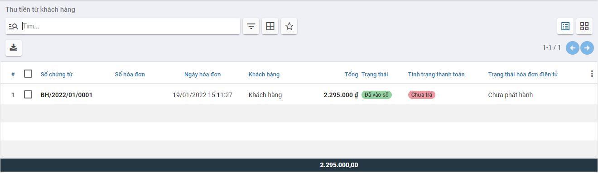
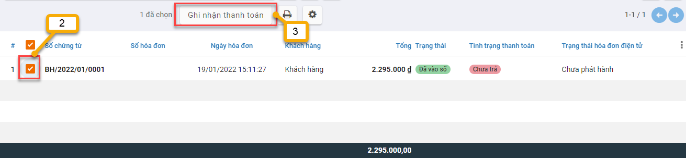
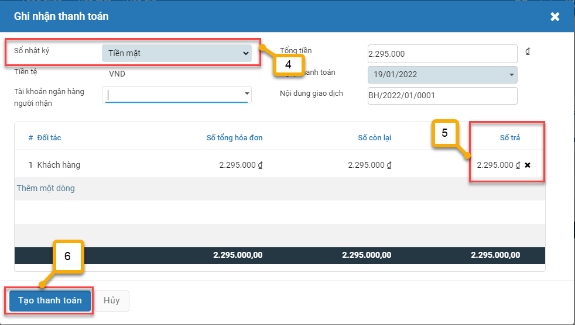
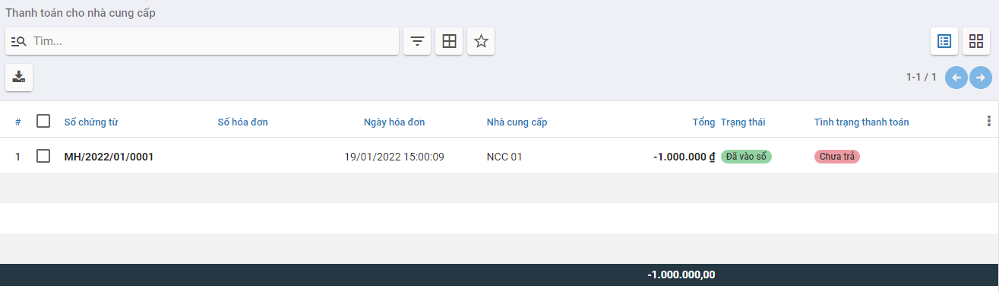
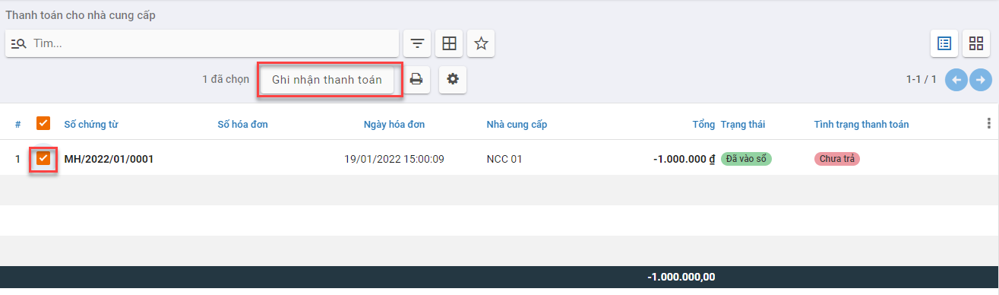
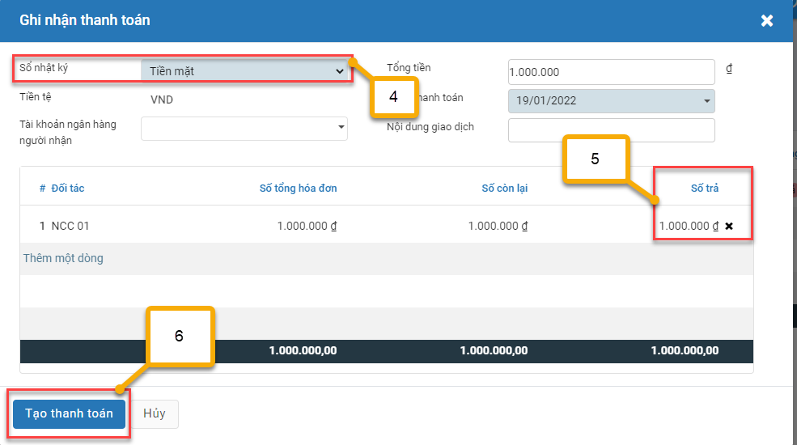
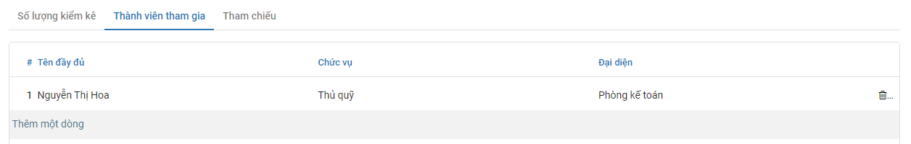

Quy trình nghiệp vụ
Kế toán được sử dụng để :
- Quản lý tình hình thu, chi, tồn tiền mặt
- Hỗ trợ phiếu in theo mẫu TT88
- Lên các báo cáo sổ quỹ tiền mặt, báo cáo kế toán
Quy trình nghiệp vụ
Các luồng quy trình
· Lập chứng từ Thu tiền mặt. Chi tiết nghiệp vụ Thu tiền mặt
· Lập chứng từ Chi tiền mặt. Chi tiết nghiệp vụ Chi tiền mặt
Thu tiền mặt
Xem video hướng dẫn
Nhập số dư đầu kỳ
Mô tả nghiệp vụ
Cho phép nhập số dư ban đầu cho các tài khoản không có nhu cầu theo dõi chi tiết theo đối tượng (khách hàng, nhà cung cấp, nhân viên), vật tư hàng hoá
Hướng dẫn trên phần mềm
- Vào phân hệ Ngân quỹ, Chọn Tiền mặt, Chọn Thu tiền mặt (Hoặc thực hiện Tìm kiếm trực tiếp chức năng trên ô tìm kiếm chung của hệ thống), Nhấn Tạo

-
Khai báo các thông tin của Thu tiền mặt
-
Tại mục Lý do thu(Tab chung) : Chọn Số dư đầu kỳ
- Tại mục Sổ nhật ký (Tab chung): Chọn Tiền mặt
- Tại mục Tổng tiền nguyên tệ (Tab chung): Nhập số tiền dư đầu kỳ
- Nhấn Lưu
- Nhấn Xác nhận
Lưu ý:
- Muốn chuyển trạng thái từ Hoàn thành về Nháp thì Nhấn Hủy xác nhận
-
Trường hợp có nhu cầu theo dõi số dư đầu kỳ chi tiết theo Khoản mục chi phí, Công trình, Đơn hàng, Hợp đồng...
-
Nhấn thêm cột dữ liệu ở Tab Bút toán
- Chọn thông tin Khoản mục chi phí, Công trình, Đơn hàng, Hợp đồng... muốn theo dõi chi tiết
Thu tiền từ khách hàng
Mô tả nghiệp vụ
Khi khách hàng mang tiền mặt đến trả nợ hoặc nhân viên đi thu tiền tại khách hàng bằng tiền mặt và mang tiền về nộp lại, sẽ phát sinh một số hoạt động sau:
- Sau khi nhận được tiền trả nợ của khách hàng, nhân viên sẽ yêu cầu Kế toán lập Phiếu thu.
- Kế toán chuyển phiếu thu cho Giám đốc ký sau đó chuyển lại cho Thủ quỹ.
- Thủ quỹ căn cứ vào Phiếu thu để thu tiền, sau đó ký vào phiếu thu và yêu cầu người nộp ký vào, đồng thời ghi sổ quỹ.
- Thủ quỹ lưu 1 liên, trả lại 1 liên cho Kế toán và chuyển 1 liên cho khách hàng.
- Kế toán căn cứ vào Phiếu thu đã đủ chữ ký để ghi sổ kế toán tiền mặt và lưu trữ phiếu thu.
Xem video hướng dẫn
Hướng dẫn trên phần mềm
- Vào phân hệ Ngân quỹ, Chọn Tiền mặt, Chọn Thu tiền từ khách hàng (Hoặc thực hiện Tìm kiếm trực tiếp chức năng trên ô tìm kiếm chung của hệ thống)

- Tích chọn chứng từ khách hàng thanh toán tiền nợ
- Nhấn Ghi nhận thanh toán

-
Tại mục Sổ nhật ký: Chọn Tiền mặt
-
Trường hợp số tiền khách hàng thanh toán nhỏ hơn số nợ thực tế trên chứng từ, cần nhập lại số tiền khách hàng trả nợ vào cột Số trả.
-
Nhấn Tạo Thanh toán để tạo Phiếu thu tiền mặt

- Kiểm tra và khai báo bổ sung các thông tin của Thu tiền mặt
- Nhấn Lưu
- Nhấn Xác nhận
Chi tiền mặt
Xem video hướng dẫn
Thanh toán tiền điện nước, tiền internet, tiền thuê mặt bằng..
Mô tả nghiệp vụ
Kế toán thực hiện tạo Phiếu chi tiền mặt cho các dịch vụ phát sinh hàng tháng như : Điện, nước,internet. mặt bằng,......
Hướng dẫn trên phần mềm
- Vào phân hệ Ngân quỹ, Chọn Tiền mặt, Chọn Chi tiền mặt (Hoặc thực hiện Tìm kiếm trực tiếp chức năng trên ô tìm kiếm chung của hệ thống), Nhấn Tạo
-
Khai báo các thông tin của Chi tiền mặt
-
Tại mục Đối tượng: Chọn Khách hàng/Nhà cung cấp.
- Tại mục Tài khoản ngân hàng đối tượng : Chọn tài khoản nhận tiền (Nếu có)
- Tại mục Người nhận: Nhập người nhận tiền (Nếu có)
- Tại Tổng tiền nguyên tệ: Nhập số tiền cần thanh toán
- Tại mục Lý do chi: Thực hiện chọn Lý do chi như Chi tiền điện bằng tiền mặt, Chi tiền mua văn phòng phẩm,.... (nhấn Tìm kiếm thêm để tìm thêm Lý do chi tiền)
- Nhấn Lưu
- Nhấn Xác nhận

Lưu ý:
- Muốn chuyển trạng thái từ Hoàn thành về Nháp thì Nhấn Hủy xác nhận
- Trường hợp có nhu cầu theo dõi chi phí chi tiết theo Khoản mục chi phí, Công trình, Đơn hàng, Hợp đồng...
- Nhấn thêm cột dữ liệu ở Tab Bút toán
- Chọn thông tin Khoản mục chi phí, Công trình, Đơn hàng, Hợp đồng... muốn theo dõi chi tiết
Thanh toán tiền lương cho nhân viên
Mô tả nghiệp vụ
Căn cứ vào bảng lương của nhân viên, Kế toán thực hiện tạo phiếu chi trả lương cho nhân viên tiền mặt hàng tháng.
Hướng dẫn trên phần mềm
- Vào phân hệ Ngân quỹ, Chọn Tiền mặt, Chọn Chi tiền mặt (Hoặc thực hiện Tìm kiếm trực tiếp chức năng trên ô tìm kiếm chung của hệ thống), Nhấn Tạo
-
Khai báo các thông tin của Chi tiền mặt
-
Tại mục Lý do chi: Chọn Chi thanh toán lương cho nhân viên bằng tiền mặt.
- Tại Tổng tiền nguyên tệ: Nhập số tiền cần thanh toán
- Nhấn Lưu

- Nhấn Xác nhận
Lưu ý: Muốn chuyển trạng thái từ Hoàn thành về Nháp thì Nhấn Hủy xác nhận
Thanh toán các chi phí: BHXH, BHYT, BH thất nghiệp
Mô tả nghiệp vụ
Khi công ty phát sinh các nghiệp vụ nộp bảo hiểm cho nhân viên, thường phát sinh các hoạt động sau:
-
Căn cứ vào Bảng lương của nhân viên, nhân viên chịu trách nhiệp nộp bảo hiểm sẽ lập yêu cầu chi tiền mặt để nộp bảo hiểm.
-
Kế toán thanh toán lập Phiếu chi, sau đó chuyển cho Kế toán trưởng và Giám đốc ký duyệt.
-
Thủ quỹ căn cứ vào Phiếu chi đã được duyệt thực hiện xuất quỹ tiền mặt
-
Kế toán thanh toán căn cứ vào Phiếu chi có chữ ký của thủ quỹ và người nhận tiền để ghi sổ kế toán tiền mặt
-
Sau khi nộp bảo hiểm xong, nhân viên đi nộp thuế sẽ giao lại cho kế toán thanh toán giấy xác nhận nộp bảo hiểm của cơ quan bảo hiểm.
Hướng dẫn trên phần mềm
- Vào phân hệ Ngân quỹ, Chọn Tiền mặt, Chọn Chi tiền mặt (Hoặc thực hiện Tìm kiếm trực tiếp chức năng trên ô tìm kiếm chung của hệ thống), Nhấn Tạo
-
Khai báo các thông tin của Chi tiền mặt
-
Tại mục Lý do chi: Chọn Chi trả bảo hiểm xã hội hoặc Chi trả bảo hiểm y tế hoặc Chi trả bảo hiểm thất nghiệp
- Tại Tổng tiền nguyên tệ: Nhập số tiền cần thanh toán
- Nhấn Lưu

- Nhấn Xác nhận

Lưu ý: Muốn chuyển trạng thái từ Hoàn thành về Nháp thì Nhấn Hủy xác nhận
Thanh toán cho nhà cung cấp
Mô tả nghiệp vụ
Khi nhà cung cấp đến nhận tiền mặt trực tiếp hoặc nhân viên mua hàng mang tiền mặt đến trả nợ cho nhà cung cấp sẽ phát sinh một số hoạt động sau:
- Sau khi nhận được yêu cầu trả nợ của nhà cung cấp hoặc yêu cầu của Giám đốc chi trả nợ cho nhà cung cấp, nhân viên làm đề nghị thanh toán và chuyển Kế toán sẽ lập Phiếu chi.
- Kế toán chuyển Phiếu chi cho Giám đốc ký duyệt sau đó chuyển lại cho Thủ quỹ.
- Thủ quỹ căn cứ vào Phiếu chi để chi tiền, sau đó ký vào phiếu chi và yêu cầu người nhận tiền ký vào, đồng thời ghi sổ quỹ.
- Thủ quỹ lưu 1 liên, trả lại 1 liên cho Kế toán và chuyển 1 liên cho nhà cung cấp.
- Kế toán căn cứ vào Phiếu chi đã đủ chữ ký để ghi sổ kế toán tiền mặt và lưu trữ Phiếu chi.
Xem video hướng dẫn
Hướng dẫn trên phần mềm
- Tại phân hệ Ngân quỹ, Chọn Tiền mặt, Chọn Thanh toán cho nhà cung cấp (Hoặc thực hiện tìm kiếm trức tiếp chức năng trên ô tìm kiếm chung của hệ thống)

- Tích chọn chứng từ khách hàng thanh toán tiền nợ
- Nhấn Ghi nhận thanh toán

- Tại mục Sổ nhật ký: Chọn Tiền mặt
- Trường hợp số tiền khách hàng thanh toán nhỏ hơn số nợ thực tế trên chứng từ, cần nhập lại số tiền khách hàng trả nợ vào cột Số trả.
- Nhấn Tạo Thanh toán để tạo Phiếu chi tiền mặt

- Kiểm tra và khai báo bổ sung các thông tin của Phiếu chi
- Nhấn Lưu
- Nhấn Xác nhận
Kiểm kê tiền mặt
Mô tả nghiệp vụ
Định kỳ theo quy định hoặc khi có phát sinh yêu cầu kiểm kê quỹ từ Ban lãnh đạo công ty, sẽ phát sinh một số hoạt động sau:
- Thành lập hội đồng kiểm kê gồm: Kế toán hoặc Giám đốc.
- Đếm thực tế số tiền mặt tồn quỹ theo từng loại tiền về mặt số lượng và mệnh giá.
- Đối chiếu số dư thực tế kiểm kê với sổ kế toán tiền mặt tại quỹ, nếu có sự chênh lệch thì thực hiện tìm nguyên nhân bằng cách đối chiếu sổ quỹ với sổ kế toán tiền mặt tìm ra những giao dịch thu, chi tiền mặt không khớp giữa 2 sổ.
- Sau khi tìm nguyên nhân thì Giám đốc hoặc Kế toán sẽ ra quyết định xử lý.
Xem video hướng dẫn
Hướng dẫn trên phần mềm
- Vào phân hệ Ngân quỹ, Chọn Tiền mặt, Chọn Kiểm kê tiền mặt (Hoặc thực hiện Tìm kiếm trực tiếp chức năng trên ô tìm kiếm chung của hệ thống), Nhấn Tạo**

-
Khai báo các thông tin Kiểm kê tiền mặt
-
Tại mục Đơn vị : Chọn Chi nhánh kiểm kê
- Tại mục Kiểm kê đến ngày: Chọn Ngày kiểm kê
- Tại mục Sổ nhật ký: Chọn Tiền mặt
-
Tại mục Tiền tệ: Chọn Tiền tệ kiểm kê
-
Tại Tab Kiểm kê : Thực hiện nhập số lượng từng mệnh giá còn tồn trong Quỹ

- Tại Tab Thành viên tham gia: Thực hiện chọn nhân viên tham gia kiểm kê

-
Nhấn Xử lý chênh lệch
-
Căn cứ vào thực tế kiểm kê thừa hay thiếu, hệ thống tự động sinh ra Phiếu thu/Phiếu chi tương ứng. Cụ thể:
- Trường hợp Số kiểm kê thực tế < Số dư trên sổ kế toán, hệ thống sẽ tự động sinh ra Phiếu chi để xử lý giá trị thừa.
-
Trường hợp Số kiểm kê thực tế > Số dư trên sổ kế toán, hệ thống sẽ tự động sinh ra Phiếu thu để xử lý giá trị thiếu.
-
Kiểm tra và khai báo bổ sung các thông tin của Chi tiền mặt
- Nhấn Lưu
- Nhấn Xác nhận